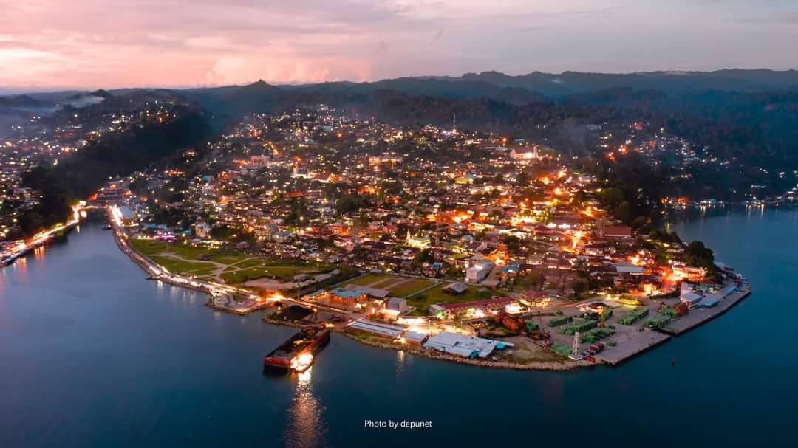

Selamat Datang
Ini adalah halaman beranda dari website saya yaitu MUHAMMAD ISMAN WAIROY. di bawah ini adalah beberapa hal menarik yang dapat kalian lihat .
Social Media Profile
Profil Cristiano Ronaldo
-
Nama Lengkap
Cristiano Ronaldo dos Santos Aveiro
-
Tanggal Lahir
5 Februari 1985
-
Tempat Lahir
Funchal, Madeira, Portugal
-
Posisi Pemain
Penyerang
-
Klub Saat Ini
Manchester United
-
Nomor Punggung
7
-
Tinggi
187 cm
-
Berat Badan
83 kg
Fakta Menarik Tentang Cristiano Ronaldo
-
Pada Usia 15 Tahun
Ronaldo pernah didiagnosis gangguan degap jantung dan tidak akan bermain sepak bola jika tidak melakukan operasi laser yang mengubah nasibnya.
-
Sebelum Bergabung dengan Manchester United
Ronaldo hampir bergabung dengan Liverpool namun batal karena harga dan tuntutan gaji yang ia ajukan.
-
Perjalanan Karir Cristiano Ronaldo
Ronaldo memenangkan lima penghargaan Ballon d'Or dan empat Sepatu Emas Eropa. Ia sejauh ini memenangkan 35 trofi sepanjang kariernya, termasuk tujuh gelar liga, lima Liga Champions UEFA, satu Kejuaraan Eropa UEFA dan satu Liga Negara UEFA.
Kota Fakfak, Papua Barat: Tempat Wisata yang Menarik
Kota Fakfak adalah salah satu kabupaten di Provinsi Papua Barat, Indonesia. Ibukota kabupaten ini terletak di Kota Fakfak. Kabupaten Fakfak terletak pada 131°30′ – 138°40′ BT dan 2°25′ – 4° LS dan berbatasan dengan: Teluk Bintuni di utara; Laut Arafura di selatan; Laut Seram dan Teluk Berau di barat; serta Kabupaten Kaimana di selatan dan timur.
Sejarah Kota Fakfak
Kota Fakfak memiliki sejarah yang panjang dan kaya. Sesuai dengan peta Pulau Papua, posisi Kabupaten Fakfak berada tepat di kawasan Kepala Burung Papua bagian selatan Provinsi Papua Barat. Berdekatan dengan beberapa kabupaten seperti Kabupaten Kaimana, Kabupaten Teluk Bintuni dan Kabupaten Sorong.
Keindahan Kota Fakfak
Kota Fakfak terkenal dengan berbagai keindahan alamnya. Dikenal sebagai Kota yang memiliki Motto “Satu Tungku Tiga Batu”. Motto ini menjadi alat pemersatu dalam membangun ikatan kekeluargaan dan harmonisasi dalam mendukung proses pembangunan yang berjalan secara aman, nyaman dan damai.
Festival Adat dan Budaya
Kota Fakfak juga memiliki festival adat dan budaya yang sangat menarik. Setiap tanggal 16 November diperingati sebagai Hari Jadi Kota Fakfak yang dirayakan secara meriah dengan berbagai festival adat dan budaya serta expo pembangunan yang melibatkan seluruh elemen masyarakat.
Investasi dan Kreativitas
Kota Fakfak juga memiliki potensi besar dalam investasi dan kreativitas. Disertai dengan digelarnya pameran-pameran pembangunan dan budaya sebagai upaya mengali dan mempromosikan daerah dalam mendorong kreatifitas daerah dan investasi.